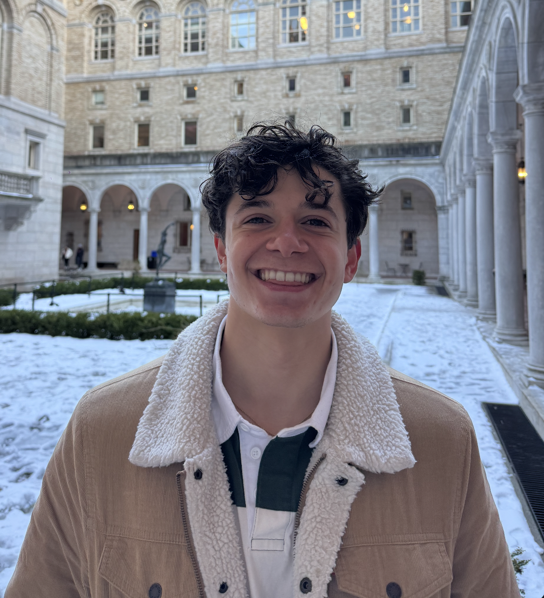

People
Current and former members of the lab
Current Laboratory Members

Dr. Rachel Carmody
I seek to understand how the human body acquires and utilizes energy, and how past changes in energy budget have shaped human evolution. Within the past decade, it has become clear that energy metabolism depends on complex interactions between diet, health, genetics, and the structure and function of the microbial communities living inside the human body. My work considers the human body as an ecosystem, integrating perspectives and experimental techniques from evolutionary biology, nutrition, physiology, microbiology, and metagenomics to pursue a richer understanding of energy exchange. Currently, my group is employing this ecosystem approach to probe the digestive capacities that are unique to humans, host-microbial cooperation and conflict over energy resources, and the caloric potential of non-caloric dietary components.

Dr. Cary Allen-Blevins
I am broadly interested in how nutrition can affect behavior via the microbiota-gut-brain axis. As breast milk has historically been the first food encountered by humans and their gut microbes, I am currently studying the potential co-evolution between mother’s milk and microbes of the infant gut. Mother’s milk is a key source of parent-offspring conflict and since mothers both ‘seed and feed’ the infant gut microbiota, milk and microbes may be interacting to affect infant behavior and energy harvest in ways beneficial to the mother. Additionally, infant behavior that increases a mother’s fitness may vary depending on the mother’s ecological context. In the Carmody lab, I study microbes, milk, and metabolites using in vivo mouse models and in vitro cultures.


Dr. Laura Schell
Broadly, I’m interested in the co-evolution of humans with our resident gut microbiota and how plasticity in the gut microbiome contributes to variations in host phenotype. My current work focuses on how gut microbes differ in their contributions to host energy balance, where I am interested in comparing the mechanisms by which different obesogenic microbial communities function by altering different components of energy balance, such as metabolic rate, energy allocation and energy harvest.


Amar Sarkar
I completed master’s degrees in psychology at the University of Oxford (Brasenose College) and neuroscience at the University of Cambridge (Trinity College). I also worked for several years as a research assistant in the Department of Experimental Psychology at Oxford. I am broadly interested in human health, development, and evolution. At Harvard, I will study host-microbe interactions using an evolutionary framework. In addition to the microbiome and host physiology, I am interested in neuroscience, immunology, endocrinology, and social and cognitive psychology, and look forward to combining these in an evolutionary framework. Outside the lab, I am an avid reader of fiction.

Christopher Ruaño
Alex Cooper-Hohn

Ludovico Rollo
Former Laboratory Members

Dr. Emily Venable

Dr. Yi Jia (Claire) Liow

Dr. Aspen Reese

Dr. Katia Chadaideh

Andrew Bolze

Eric Chan

Molly Chiang

Jessica Diaz

Caroline Diggins

Kevin Eappen

Mira-Rose Kingsbury Lee

Andrew Li

Jinhui Liu

Brandi Moore